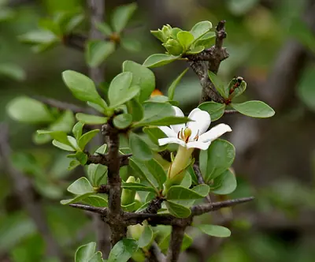

pranet · 出典付きの植物図鑑
山石榴 ☠
Catunaregam spinosa (Thunb.) Tirveng. · Rubiaceae

Catunaregam spinosa, the mountain pomegranate, is a flowering plant in the family Rubiaceae, found in South Asia and other Asian countries. Almost all parts of the plant are used as a traditional medicine in Ayurveda and fruits have been reported to be used in medicine as well as in food. Various flavonoids, alkaloids, tannins, lignans, terpenoids, and volatile oils have been reported from this plant. Several studies have reported the modern pharmaceutical activities of C. spinosa such as piscicidal, molluscicidal, antioxidant, anti-inflammatory, antidiabetic, and antihyperlipidemic activities
出典: Wikipedia (en): Catunaregam spinosa · CC BY-SA 4.0
異名: Canthium chinense Pers., Canthium coronatum Lam., Canthium spinosum (Thunb.) J.St.-Hil., Catunaregam brandisii Kottaim., Ceriscus malabaricus Gaertn., Gardenia dumetorum Retz., Gardenia dumosa Salisb., Gardenia floribunda (Roxb.) Spreng., Gardenia glabra R.Br. ex Wall., Gardenia latifolia Schltdl. ex Hook.f., Gardenia spinosa L.f., Gardenia spinosa Thunb., Gardenia stipularis Rottler, Genipa dumetorum (Retz.) Baill., Narega coduva Raf., Posoqueria dumetorum (Retz.) Willd. ex Roxb., Posoqueria floribunda Roxb., Randia brandisii Gamble, Randia dumetorum (Retz.) Lam., Randia dumetorum (Retz.) Poir.
同定や利用は自己責任でお願いします。この図鑑だけを根拠に野生の植物を食べないでください。
出典
- 学名: World Flora Online Plant List 2026-06 · CC0 1.0
- 名前: Wikipedia の記事名と Wikidata · CC0 1.0（Wikidata）。記事名は事実
- 説明: Wikipedia (en): Catunaregam spinosa · CC BY-SA 4.0
- 食用・毒性: World Checklist of Useful Plant Species (Diazgranados et al. 2020, RBG Kew) · CC BY 4.0
- 分布: World Checklist of Vascular Plants (WCVP), RBG Kew, version 2026-06-04 · CC BY 3.0
このページは pranet のデータから自動生成しています。コードは MIT、データは項目ごとのライセンス（説明）。